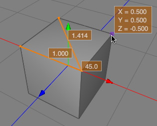

Ruler Tool
The ruler tool can be used to measure distances and angles between points of polygon and spline objects.

Modes
This tool only works on polygon and spline objects. It's available in all modes.


To get the coordinates of a vertex you just have to move the mouse cursor over the vertex. Then a orange box will display the coordinates in the chosen coordinate system. See image above.
To measure distances click on two vertices of a polygon object. Now a orange line connecting the two selected points will appear. In the middle of the line the length will be displayed.
To measure angles you have to click on three vertices (see image above). At the second vertex the angle will be displayed. In the example above 45°.
As long as you don't click into the empty space or press the ESC key the measures will be displayed. So you can even edit the mesh and see the ruler update in real time.
Keys
- ESC: Use the ESC key to reset the tool.
Properties
- Coord system: The coordinate system in which the distance or angle will be measured.